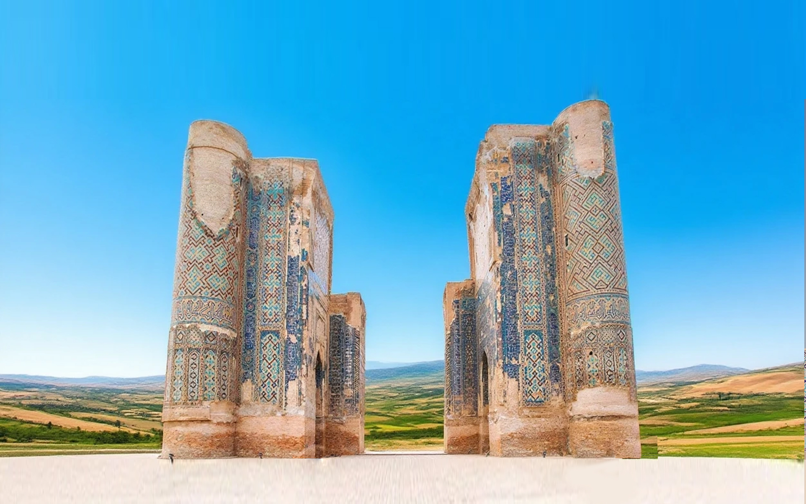
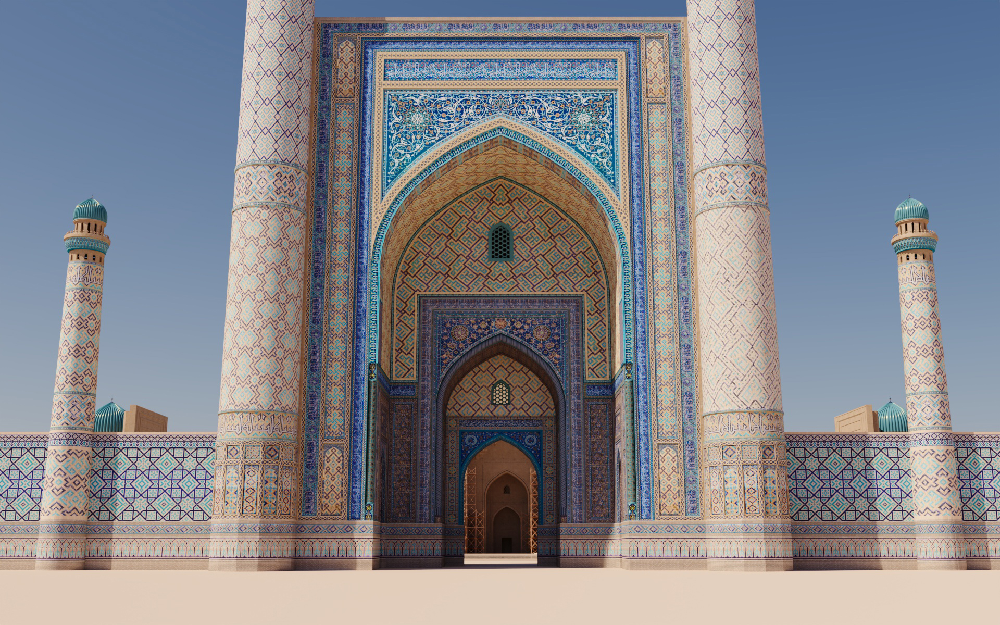

Выберите язык / Select language / Tilni tanlang
Русский
English
O‘zbekcha
 
Сделайте селфи в историческом городе
Если камера не работает — разрешите доступ в настройках браузера.
Без маски
Маска: Masira1
Маска: Masira2
📸 Сделать фото
💾 Скачать
🔙 Назад